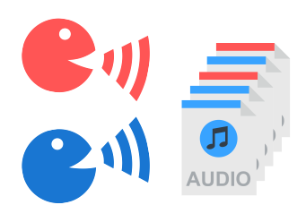

Feliks Hibraj

Academic Service
- Research Fellow, EU Horizon 2020 - Project Memex, 2020 - Present
- Advisor: Prof. Marcello Pelillo
- Tutor: Sebastiano Vascon
- M.S. in Computer Science, Ca' Foscari University, Venice, Italy, 2020
- Advisor: Prof. Marcello Pelillo
- Co-Advisor: Prof. Massimiliano Pontil
- B.S. in Computer Science, Ca' Foscari University, Venice, Italy, 2017
- Advisor: Prof. Marcello Pelillo
- Co-Advisor: Prof. Thilo Stadelmann
- Appointed Best Foreign Student of the University
- Other
- Representative of the students (DAIS, Ca' Foscari University), 2015-2017
- Representative of the students (DAIS, Ca' Foscari University), 2017-2019
- Speech in St. Mark's Square as the Best Foreign Student, link to speech, November 2017
Publication
Speaker Clustering using Dominant Sets [link] [code]
International Conference on Pattern Recognition (ICPR 2018)